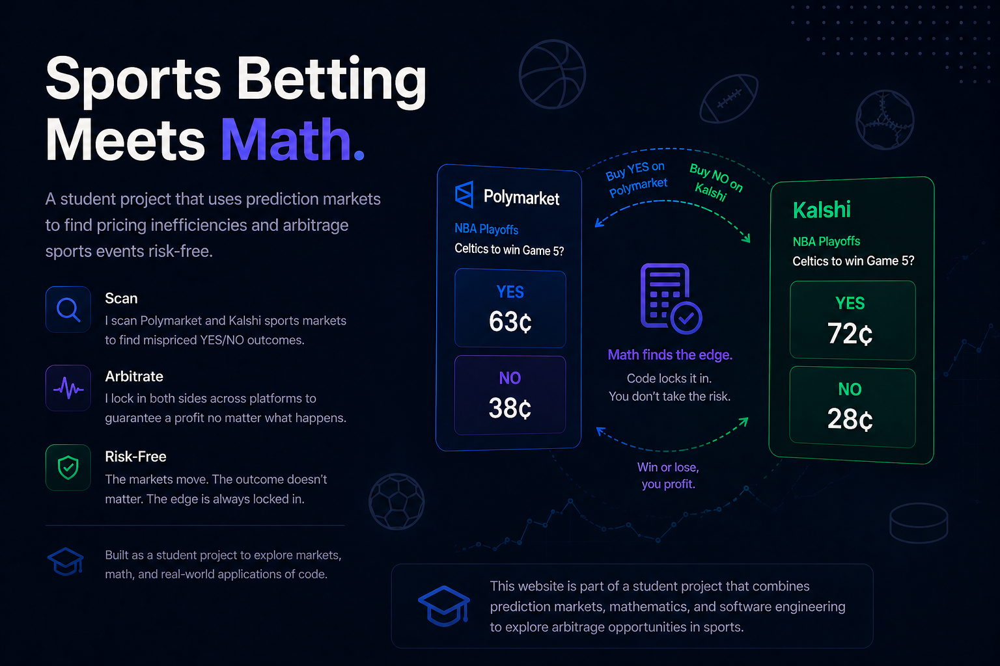

What is Arbitrage?
Learn the core concept behind locking in edge with two-sided positioning.
Open Arbitrage PageA lightweight scaffold for tracking sports betting arbitrage strategy performance.

I built a bot that tracks sports event prices across prediction markets and places paired positions when a mismatch creates edge. The strategy aims to reduce directional risk by covering opposite outcomes across platforms, turning price inefficiencies into repeatable opportunities.
Learn the core concept behind locking in edge with two-sided positioning.
Open Arbitrage PageSee how Polymarket and Kalshi contracts are compared through API inputs.
Open What is a Prediction Market?Review trade structures, spread checks, and margin calculations.
Open Trades PageTrack daily, weekly, and all-time performance snapshots.
Open PnL Snapshot